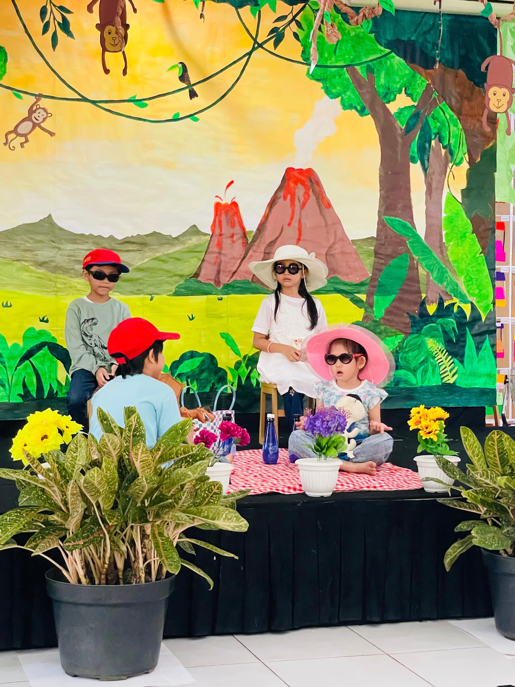
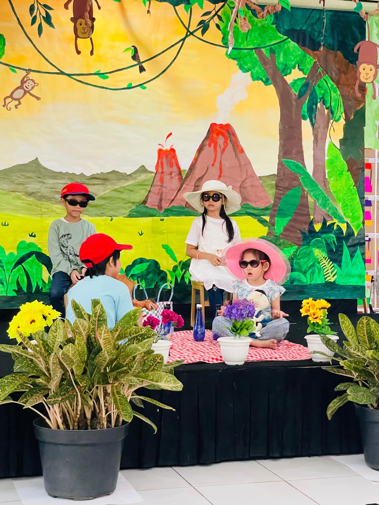
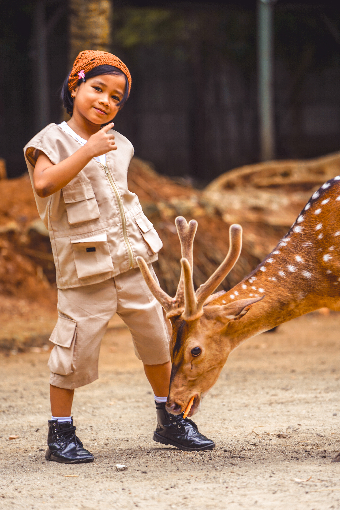
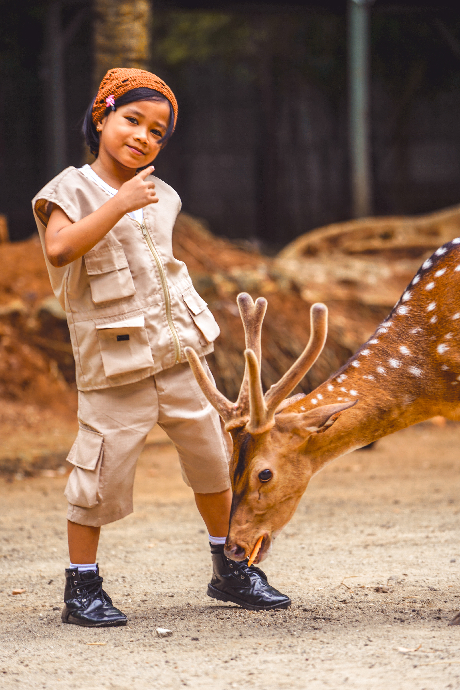
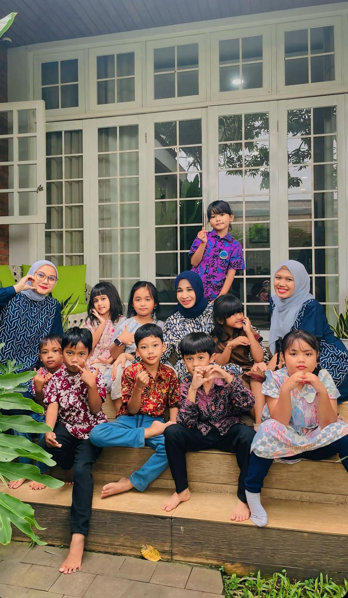
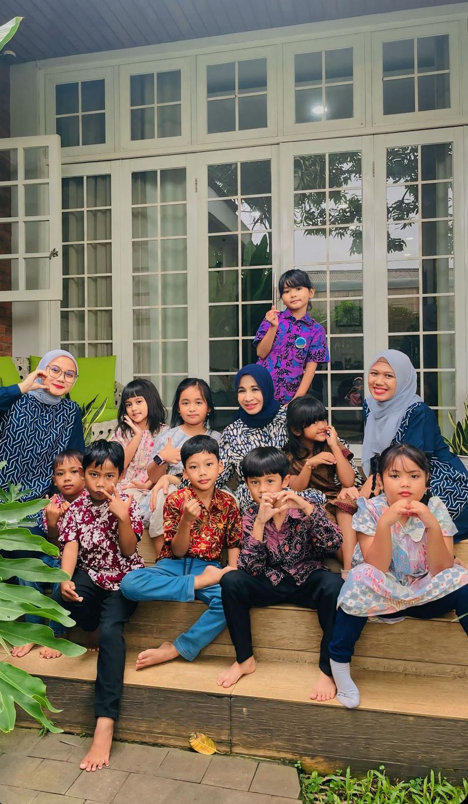

Galeri Kegiatan
Kutilang Fair
Memberikan apresiasi dalam bentuk penghargaan pada hasil karya dan kerja anak selama 1 tahun:
Memperlihatkan kreatifitas, kemampuan dan kerja keras anak serta membangun estetika.
Ekspresi Seni Akhir Tahun
Memberikan anak-anak panggung dalam mengekspresikan diri dan menunjukkan perkembangan pencapaian sepanjang tahun dengan membangun rasa percaya diri, mengembangkan bakat dan minat anak serta melatih keterampilan sosial.

 

Buku Tahunan
Merupakan dokumentasi perjalanan pendidikan anak yang membangun identitas sekolah melalui kegiatan, budaya dan nilai-nilai yang dianut sekolah.
Buku Tahunan adalah sebuah penghargaan atas masa kecil anak-anak akan semua kenangan disaat awal anak mengenal lingkungan pertama setelah rumah.


 

 
